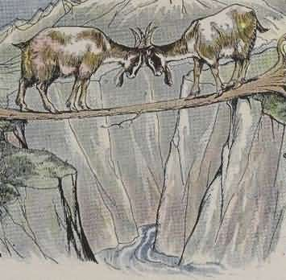

Dua Ekor Kambing
Saat itu ada dua ekor kambing berjalan dengan gagahnya dari arah yang berlawanan di sebuah pegunungan yang curam, saat itu secara kebetulan mereka secara bersamaan masing-masing tiba di tepi jurang yang dibawahnya mengalir air sungai yang sangat deras. Sebuah pohon yang jatuh, telah dijadikan jembatan untuk menyebrangi jurang tersebut. Pohon yang dijadikan jembatan tersebut sangatlah kecil sehingga tidak dapat dilalui secara bersamaan oleh dua ekor tupai dengan selamat, apalagi oleh dua ekor kambing. Jembatan yang sangat kecil itu akan membuat orang yang paling berani pun akan menjadi ketakutan.

Tetapi kedua kambing tersebut tidak merasa ketakutan. Rasa sombong dan harga diri mereka tidak membiarkan mereka untuk mengalah dan memberikan jalan terlebih dahulu kepada kambing lainnya.
Saat salah satu kambing menapakkan kakinya ke jembatan itu, kambing yang lainnya pun tidak mau mengalah dan juga menapakkan kakinya ke jembatan tersebut. Akhirnya keduanya bertemu di tengah-tengah jembatan. Keduanya masih tidak mau mengalah dan malahan saling mendorong dengan tanduk mereka sehingga kedua kambing tersebut akhirnya jatuh ke dalam jurang dan tersapu oleh aliran air yang sangat deras di bawahnya.
Pesan Moral "Lebih baik mengalah daripada mengalami nasib sial karena keras kepala".